Writer 05
Tablas, gráficos y sumarios
Tablas
Las tablas son una forma de disposición de la información cuya justificación se basa en la naturaleza de los datos que contienen. No toda información se presenta bien en una tabla. En ocasiones la decisión sobre crear una tabla es obvia, como por ejemplo en los datos numéricos de una medición, pero en otras no lo es tanto: comparar resultados obtenidos a través de métodos diferentes o para resumir información dada previamente en el texto o en otras tablas.
Recomendaciones generales
Es aconsejable seguir algunos lineamientos para que las tablas en nuestros documentos sean un soporte y apoyo a la narrativa del mismo y no un obstáculo para el lector. Podemos ver en la siguiente imagen algunas ideas
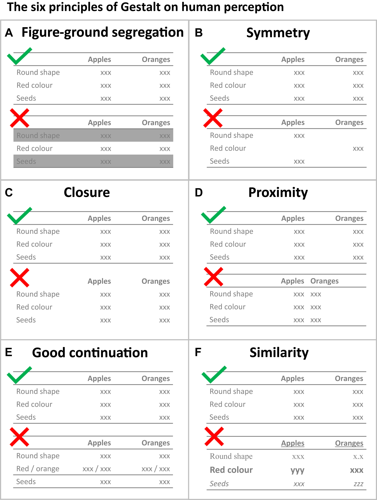
Algunas guías generales para las tablas que contienen información científica:
- Títulos: Cortos y descriptivos en columnas o filas (abreviar si fuera necesario). Se recomienda usar negrita en títulos de columnas.
- Siempre inlcuir las unidades, incertidumbres, número de muestras u otra información relevante para los datos que se muestran.
- Tabla: Debe tener referencia numerada (o nombre) para su posterior mención/referencia en el texto.
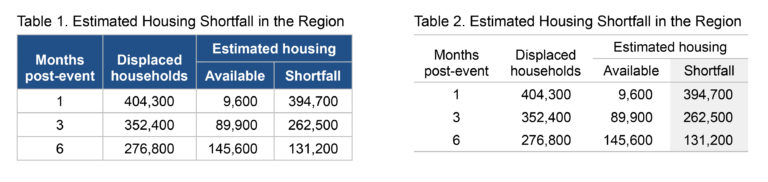
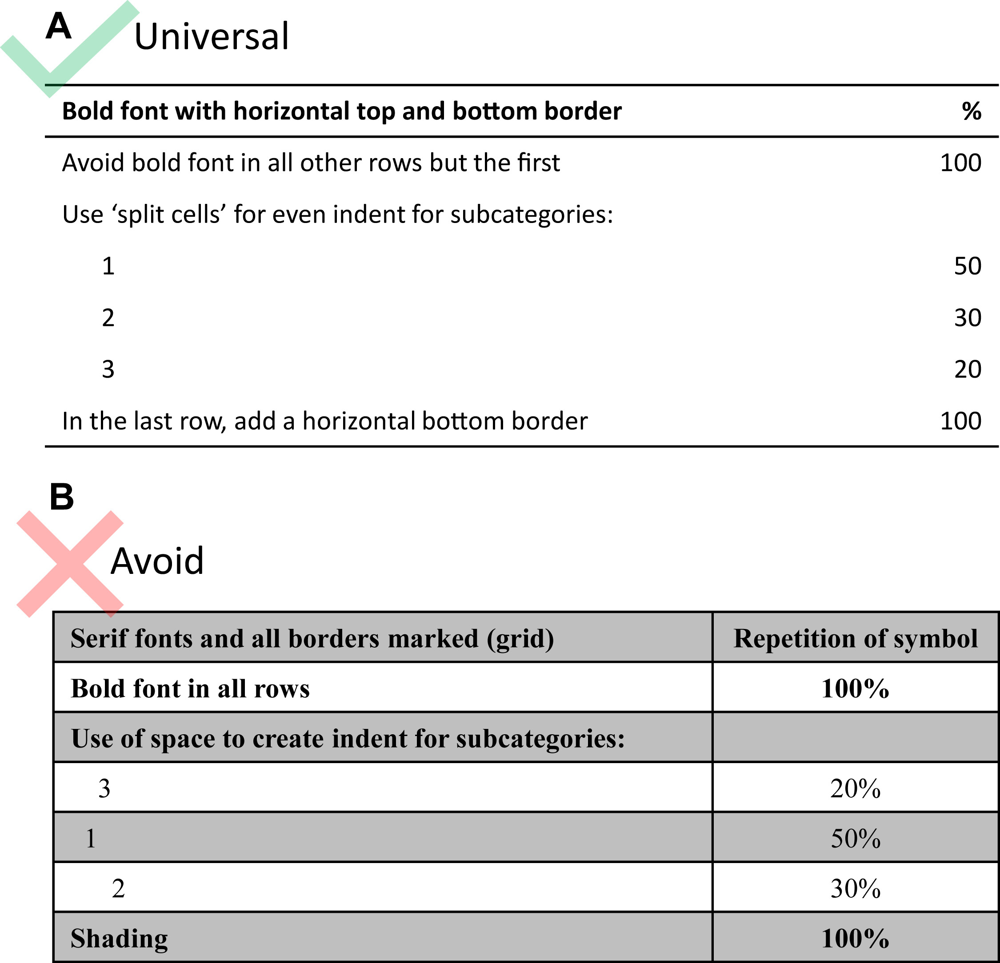
- Tipografía: Se recomienda usar tipografías sin serifs (sans-serif) para generar una lectura más ágil y diferenciarla del cuerpo del texto.
- Los valores calculados que dependen de valores de una columna es mejor colocarlos a la derecha del valor del cual dependen.
- Alineación del texto: Para primera columna o fila de descripción se prefiere la alineación izquierda.
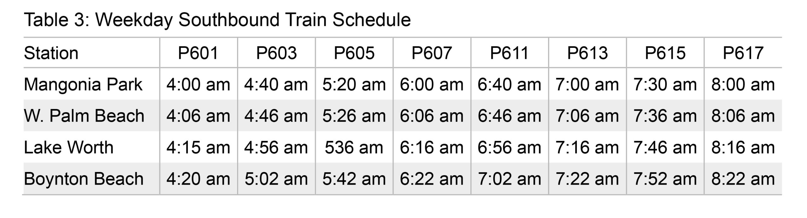
- Alineación de los títulos: de las columnas debe concordar con el de los datos que esas columna contiene.
- Para datos numéricos, dependiendo de las posiciones decimales de los datos y su unidad de medida se aconsejan diferentes alineaciones según puede verse en la figura. La regla general es que debe permitir una rápida identificación del orden de magnitud del número.
- Posiciones decimales: restringirse a la cantidad de posiciones decimales significativas de la apreciación del origen de los datos reportados. Redondear a estos valores los datos calculados.
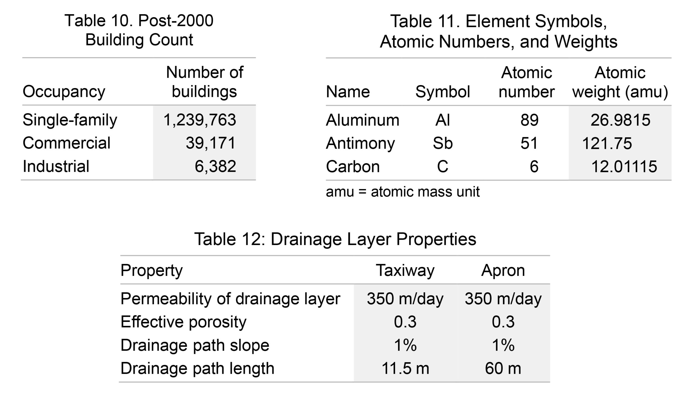
- Espacio entre columnas: Debe ser el mínimo indispensable para permitir delimitación visual entre columnas sin necesidad de agregar lineas verticales.
- Alineación vertical del contenido de una celda: Depende de si el contenido entre columnas tiene una extensión similar o no. Si la extensión es similar, alinearlo al centro deja un mejor margen visual. En cambio, si la extensión varía entre columnas se prefiere una alineación que se ajuste a la última línea (para títulos) o a la primera (para datos).
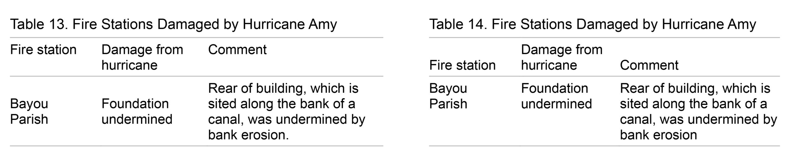
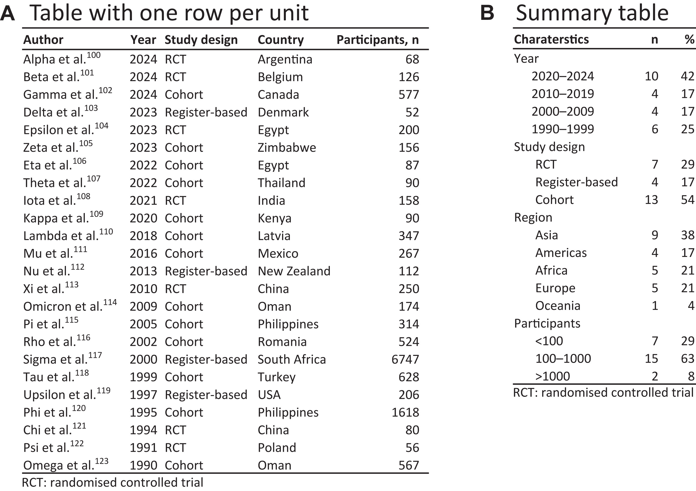
En Writer
Las tablas en libre office writer son un poco más amigables que las de otros procesadores de texto aunque no son tan potentes como las que veremos en libre office calc (la planilla de cálculo). Aún así, cuando usemos datos que provengan de otros orígenes (sistemas de adquisición de datos como sensores o equipos de laboratorio) o una planilla de calc, deberemos saber como formatear la tabla para su posterior uso en un documento de texto.
Insertar una tabla
Para agregar una tabla:
- menú Tabla > Insertar > Tabla.
- Especifica el número de filas y columnas.
- Ajusta las propiedades básicas (ej. nombre, bordes). clic en Aceptar.
Método rápido:
el atajo Ctrl + F12 o clic en el icono de tabla en la barra estándar.
Modificar la estructura
Añadir o eliminar filas/columnas
- Añadir: Clic derecho en una celda > Insertar > Filas/Columnas.
- Eliminar: Seleccionar las celdas > clic derecho > Eliminar celdas.
Combinar celdas
- Selecciona las celdas a combinar.
- Clic derecho > Combinar celdas.
Propiedades de tablas
Si hacemos click derecho > propiedades de tabla accedemos las propiedades generales de la tabla como su alineación en relación a la página, tamaño de filas y columnas, etc.
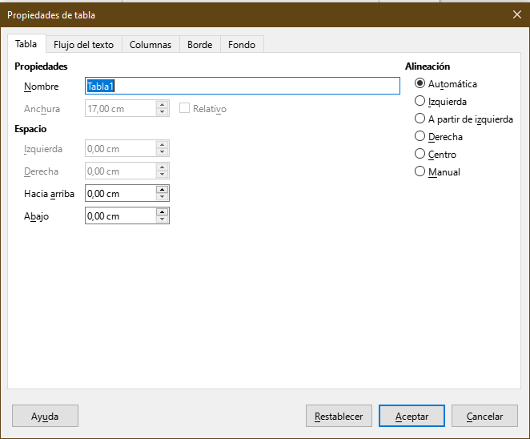
Estilos de tabla
En writer contamos con diferentes tipos de estilos para tablas
- Predeterminados: Estilos como “Tabla Clásica” o “Tabla Sin Bordes”.
- Personalizados: Estilos creados por el usuario.
A diferencia de los estilos de página, párrafo, texto, etc. que vimos hasta ahora no es posible editar los estilos de tabla existentes desde la barra de estilo en las últimas versiones de libe office. El estilo de tabla académico es un buen punto de partida para personalizarlo según las necesidades de nuestros documentos. Para crear un estilo de tabla hacemos lo siguiente: tabla > estilos de formato automático (con el cursor en una celda de la tabla). Allí podremos crear desde cero un estilo de tabla o modificar los existentes. Más detalles acá.
Crear un estilo desde tabla existente
Aunque como vimos con los estilos de párrafo muchas veces es más comodo crear la tabla, formatearla como nos guste y luego crear el estilo a partir de la selecicón.
Hacemos una tabla y la formateamos como nos guste, por ejemplo la que se ve a continuación
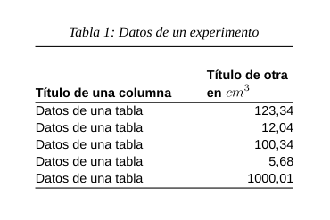
La seleccionamos y vamos a tabla > estilos de formato automático y luego hacemos añadir damos un nombre al estilo y ya podremos utilizarlo en nuestros documentos.
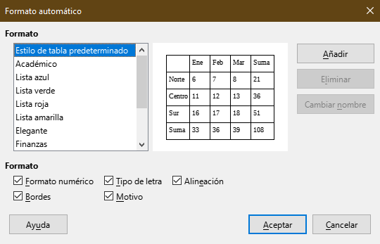
Tablas desde origen externo
Al usar datos de otro origen, como una planilla de cálculo es importante que se preserve tanto la integridad y legibilidad de los datos como que el formato de la tabla sea acorde y concuerde con el documento de destino.
Copiar y pegar los datos desde una hoja de cáculo no es aconsejable salvo que no hayamos dado formato alguno a los datos en la planilla, en tal caso tendremos una tabla que podremos formatear a gusto o aplicar el estilo de nuestro interés.
Si usamos las opciones de pegado especial tenemos
Hoja de cálculo: Inserta los datos como una planilla de calc que podremos editar con todas las funcione sde la planilla, pero también con las dificultades para formatearla que esto nos trae. No se aconseja salvo que no se puedan tener los datos en una planilla externa.
Metarchivo (GDI): No permite opciones de formato. Es util sólo cuando tenemos una tabla cuyo tamaño, contenido y formato esté listo para ser incluido en nuestro documento.
Imagen mapa de bits: Mismo que el caso anterior pero con pérdida de calidad si se amplía la imagen.
Lenguaje HTML: Conserva propiedades del formato de origen pero permite su edición en writer y sólo pega los datos visibles (útil si tenemos una tabla con columnas ocultas en calc)
Intercambio dinámico de datos: Crea un vínculo a la planilla y los cambios hechos ahí son reflejados en el documento de Writer. Pueden aplicársele los formatos de Writer pero incluye columnas ocultas si las hubiere.
Texto sin formato: Copia el texto tabulado pero sin formar parte de una tabla
Formato de texto enriquecido: Copia el contenido junto al formato numérico pero no el específico de la tabla y permite su posterior edición en Writer
Sumarios e índices
Los índices y sumarios permiten crear automáticamente listados a partir de contenido de cierta tipología dentro del documento:
- Títulos, subtítulos, etc: índice
- Tablas
- Figuras
- Ecuaciones (u otros objetos personalizados)
Para crear uno vamos a insertar > sumario e indice y veremos el siguiente menú
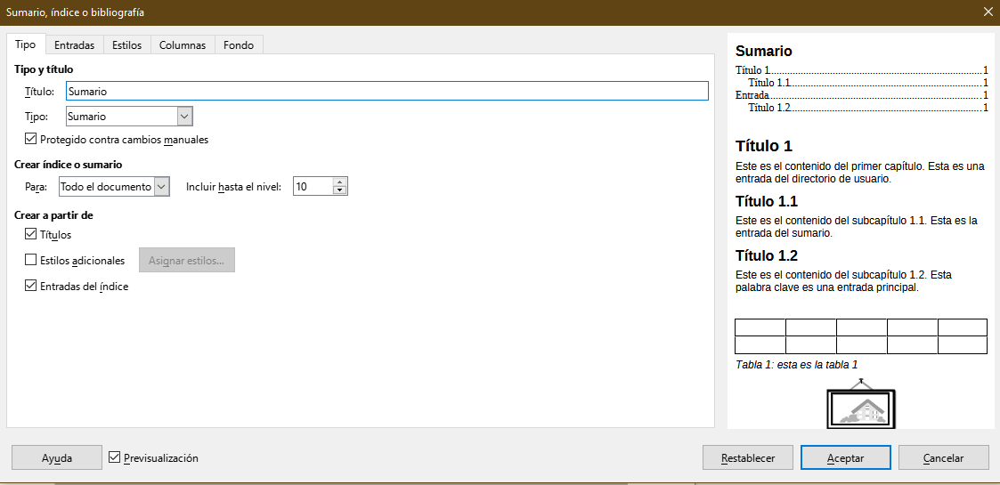
Este menú nos ofrece la opción para crear diferentes tipos de índices seleccionando desde tipo pudiendo cambiar el nombre en titulo
Si elegimos como tipo índice de figuras podremos elegir qué tipo de elemento el índice colecciona para mostrar
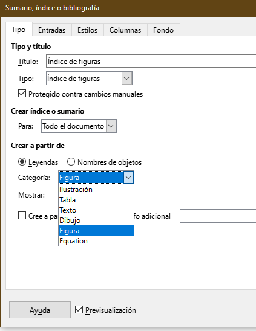
índice alfabético
Para crear un índice alfabético debemos primero crear las entradas que indizaremos haciendo insertar > sumario e índice > entrada de índice
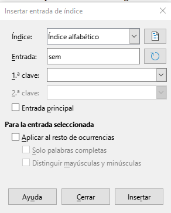
Si estamos incluyendo ítems debemos primero marcarlos como entrada princpal para que aparezcan al momento de generar el índice alfabético desde el menú indicado más arriba.